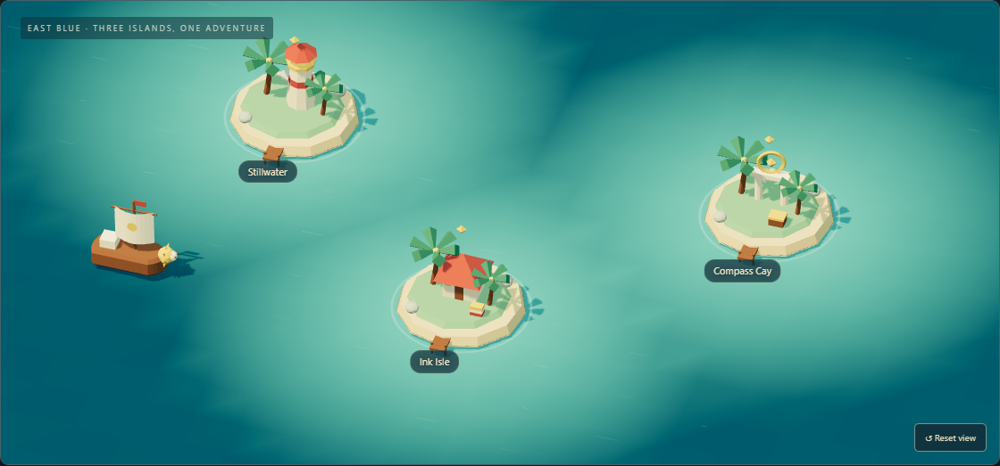

Make play optional
Direct destination buttons and text summaries keep information available without a mouse, a completed quest, or WebGL.
FIELD NOTES / 001 · PUBLIC BUILD
Turning a love of One Piece into a small interactive world—with useful tools and engineering decisions you can inspect.

01 / THE PROBLEM
The first profile was almost entirely artwork. It expressed a personal interest, but visitors had little to read, inspect, or try. A view badge added a number without reliably identifying who visited.
The goal: introduce the person behind the profile, keep the adventurous spirit, and make the experience useful.
02 / THE EXPERIENCE
Sail to islands to learn about Python services, TypeScript interfaces, and an applied AI direction. Collect three discovery stamps, then settle into the focus timer, notes, or link collection.
Visitors can also skip the voyage entirely. The engineering summary and every tool are directly accessible.
03 / HOW IT FITS
Three.js handles the scene. Ordinary HTML keeps the tools and content accessible. esbuild packages the game locally, so it needs no model CDN or application server.
Explore the architecture diagram ↗04 / THE CHOICES
Direct destination buttons and text summaries keep information available without a mouse, a completed quest, or WebGL.
No sign-in and no app upload. The tradeoff is no cross-device sync; text export gives visitors a way to keep their notes.
The timer recalculates elapsed time after background throttling. Reloading resets it, and it does not promise background notifications.
The profile has no view counter. Image-based counts cannot distinguish the profile owner from other GitHub viewers.
05 / THE EVIDENCE
Browser tests cover a complete voyage, saved discoveries, timer controls, notes export, safe bookmark input, mobile layout, and the WebGL fallback. GitHub Actions makes the current results visible.
The suite runs in Chromium, with software WebGL in CI. It does not establish performance on every device or complete cross-browser and assistive-technology coverage.